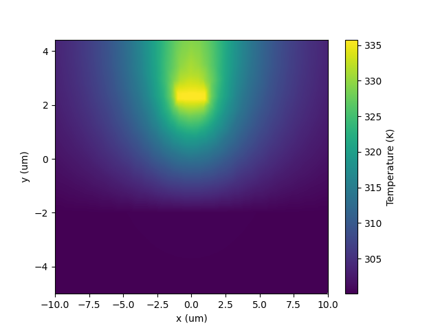

Thermal Waveguide Tuner (HEAT)#
Getting started example for HEAT simulation with PyLumerical. Calculates the temperature profile for a thermal waveguide tuner. Prerequisites: Valid HEAT license is required.
[ ]:
1import matplotlib.pyplot as plt
2import numpy as np
[ ]:
3import ansys.lumerical.core as lumapi
[ ]:
4with lumapi.DEVICE() as device:
5 # Create materials
6 device.addmodelmaterial({"name": "Silicon"})
7 device.addmaterialproperties("HT", "Si (Silicon)")
8
9 device.addmodelmaterial({"name": "Aluminium"})
10 device.addmaterialproperties("HT", "Al (Aluminium) - CRC")
11
12 device.addmodelmaterial({"name": "SiO2"})
13 device.addmaterialproperties("HT", "SiO2 (Glass) - Sze")
14
15 device.addmodelmaterial({"name": "Air"})
16 device.addmaterialproperties("HT", "Air")
17
18 # Create geometry
19 device.addrect({"name": "substrate", "x": 0, "x span": 0.45e-6, "y": 0.11e-6, "y span": 0.22e-6, "z": 0, "z span": 1e-6, "material": "Silicon"})
20 device.addrect({"name": "waveguide", "x": 0, "x span": 100e-6, "y": -21e-6, "y span": 38e-6, "z": 0, "z span": 1e-6, "material": "Silicon"})
21 device.addrect({"name": "oxide", "x": 0, "x span": 100e-6, "y": 4e-6, "y span": 12e-6, "z": 0, "z span": 1e-6, "material": "SiO2"})
22 device.addrect({"name": "air", "x": 0, "x span": 100e-6, "y": 7.21e-6, "y span": 5.58e-6, "z": 0, "z span": 1e-6, "material": "Air"})
23 device.addrect({"name": "wire", "x": 0, "x span": 2e-6, "y": 2.32e-6, "y span": 0.2e-6, "z": 0, "z span": 1e-6, "material": "Aluminium"})
24
25 # Set simulation region
26 device.select("simulation region") # Simulation region named "simulation region" is included in new simulation by default
27 device.set({"dimension": "2D Z-Normal", "x": 0, "x span": 80e-6, "y": 0, "y span": 18e-6, "z": 0})
28
29 # Add HEAT solver object
30 device.addheatsolver({"norm length": 200e-6})
31
32 # Add boundary conditions
33 device.addtemperaturebc("HEAT")
34 device.set({"temperature": 300, "surface type": "simulation region", "y min": True})
35
36 device.addconvectionbc("HEAT")
37 device.set({"h convection": 10, "surface type": "material:material", "material 1": "SiO2", "material 2": "Air"})
38
39 # Add heat sources
40 device.adduniformheat(
41 {"geometry type": "volume", "volume type": "solid", "volume solid": "wire", "use solver norm length": True, "total power": 0.02}
42 )
43
44 # Add monitors
45 device.addtemperaturemonitor(
46 "HEAT", {"name": "temperature monitor", "monitor type": "2D z-normal", "x": 0, "x span": 20e-6, "y min": -5e-6, "y max": 4.42e-6, "z": 0}
47 )
48
49 # Run simulation
50 device.save("thermal_tuner.ldev")
51 device.run("HEAT")
52
53 # Visualize results
54 results = device.getresult("HEAT::temperature monitor", "temperature")
55
56 # HEAT results are returned in an unstructured dataset, need to be converted to a rectilinear grid for pyplot
57 vertices = device.getdata("HEAT::temperature monitor", "temperature", "vertices")
58 elements = device.getdata("HEAT::temperature monitor", "temperature", "elements")
59 temperature_unstructured = results["T"]
60
61 x = np.linspace(-10e-6, 10e-6, 1000)
62 y = np.linspace(-5e-6, 4.42e-6, 1000)
63
64 temperature = device.interptri(elements, vertices[:, :2], temperature_unstructured, x, y)
65
66 # Plot temperature profile
67 im = plt.pcolormesh(x * 1e6, y * 1e6, temperature.T, shading="nearest")
68 cbar = plt.colorbar(im)
69 cbar.set_label("Temperature (K)")
70 plt.xlabel("x (um)")
71 plt.ylabel("y (um)")
72 plt.show()
